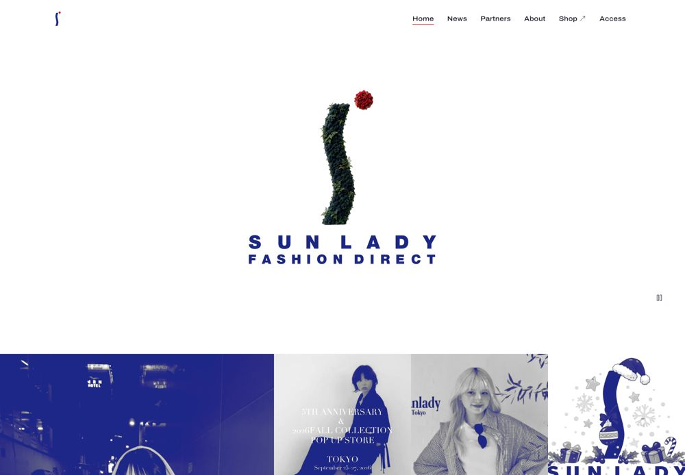
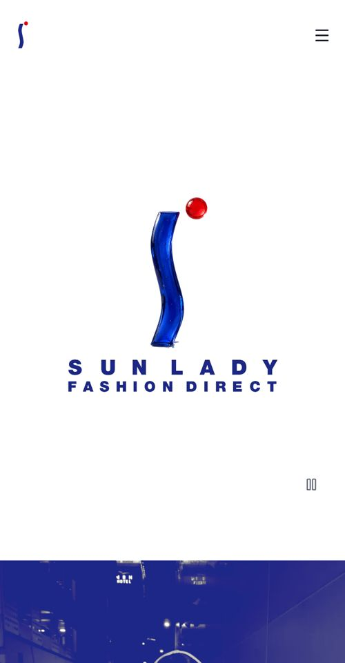

実案件アパレル会社の公式サイト「SUNLADY FASHION DIRECT」
ホームページの制作と運用
取引先の方や、働きたいと考えている方が、知りたいことに迷わずたどり着けるように、ページの組み立てから考えました。ブランドの雰囲気を守るために、色、余白、文字の決まりを先に作り、動きのある画面までスマホとPCの両方で作りました。
変わったことニュースを、会社の方が自分で更新できるようになりました。
- 担当
- デザイン、実装、公開したあとの運用
- 使ったもの
- Figma、Next.js、microCMS
- サイト
- sunlady.tokyo

